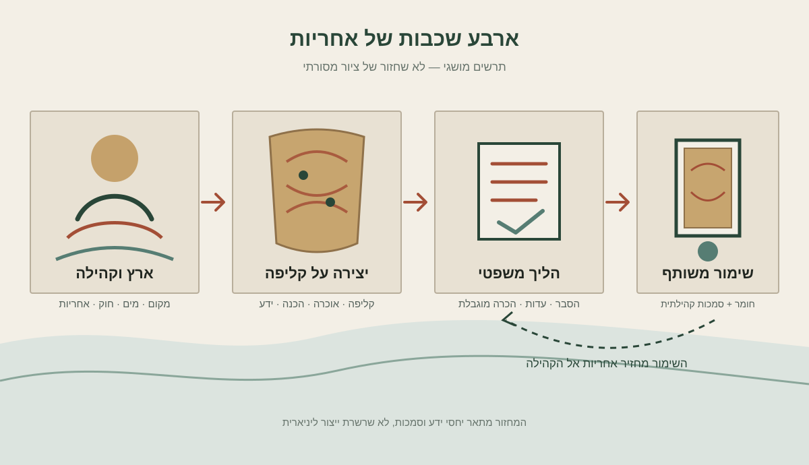

אמנות ילידית · משפט · שימור תרבותי · אנתרופולוגיה של הידע
החוק שנכתב על קליפת עץ
80 ציורים של בני יולנגו מצפון אוסטרליה סייעו להסביר לבית המשפט את הקשר בין קהילה, ים, חוק וזכויות דיג. מחקר שימור חדש מציג שאלה עמוקה לא פחות: כיצד שומרים על יצירה בלי להפריד אותה מן הידע, הסמכות והאחריות שהיא נושאת?
במוזיאון הימי הלאומי של אוסטרליה בסידני שמורים ציורים שנעשו על קליפת עץ. במבט ראשון אפשר לחשוב שמדובר באוסף אמנות: משטחים ארוכים של קליפה, צבעי אדמה, דמויות של בעלי חיים, קווים ודגמים גאומטריים. אבל היצירות האלה נוצרו גם כדי לטעון טענה משפטית. הן תיעדו יחסים בין בני אדם, מקומות, אבות קדומים, נהרות, חופים ומים מלוחים — יחסים שהדין האוסטרלי התקשה להכיר בהם כל עוד התייחס לים וליבשה כשני מרחבים נפרדים.
היצירות מוכרות בשם Saltwater Bark Collection — אוסף ציורי הקליפה של ארץ הים. הן נוצרו בידי אמנים בני יולנגו (Yolŋu), קהילות ילידיות החיות בצפון־מזרח ארץ ארנהם שבטריטוריה הצפונית של אוסטרליה. האוסף כולל 80 עבודות שנוצרו בידי 47 אמנים מ־15 חמולות. הן נועדו להציג בפני מי שאינם בני המקום את חוקי הקהילה, סיפורי האבות והקשרים שבאמצעותם היא מבינה את החוף ואת הים כחלק מארץ חיה אחת. [1] [2]

כשהים אינו מתחיל בקו החוף
בשנת 1996 התגלה מחנה דיג בלתי חוקי שהוקם בתוך אזור מנגרובים קדוש בשם Garraŋali, במפרץ Blue Mud Bay. לפי תיאורו של המוזיאון הימי הלאומי, האירוע נתפס כחילול של מקום הקשור לבארו (Bäru), אב קדמון בדמות תנין במסורת של חמולת Maḏarrpa. האירוע עורר את Djambawa Marawili, מנהיג ואמן בן החמולה, ואת עמיתיו לפעולה ציבורית: הם החלו ליצור ציורים על קליפה שיסבירו לאנשים מבחוץ את החוקים, הפילוסופיות והסיפורים הנוגעים לחופים, לנהרות ולמים שבתחום ארצם. [2]
כדי להבין את המהלך צריך להיזהר מתרגום פשטני של המושג האנגלי Country. בעברית אפשר לומר ״ארץ״ או ״מקום״, אבל שתי המילים אינן תופסות את מלוא המשמעות. בהקשר של בני יולנגו, Country אינה רק חלקת קרקע שאפשר למדוד, למכור או לסמן במפה. היא כוללת מקומות, מים, בעלי חיים, סיפורי אבות, שמות, זכויות, חובות, שירים, טקסים ויחסי קרבה. הים אינו בהכרח מרחב חיצוני שמתחיל אחרי שהיבשה מסתיימת; הוא חלק מרשת היחסים שבאמצעותה מוגדרים מקום, זהות וסמכות.
ההבחנה הזאת אינה רק רעיון פילוסופי. היא נוגעת לשאלה מי רשאי לדוג, לנוע, לאסוף מזון או להיכנס לאזור מסוים. החוק האוסטרלי, לעומת זאת, נבנה מתוך קטגוריות משפטיות שמבחינות בין קרקע לבין מים. הגבול המשפטי בין שתי הקטגוריות נעשה בעייתי במיוחד באזור שבין קו השפל לקו הגאות — רצועת החוף המכונה אזור הגאות והשפל. מבחינת בני יולנגו, המים האלה אינם שטח הפקר רק מפני שהם מכוסים במים בחלק מן היום.
ההיסטוריון מרטין דוזינברי, בפרק ״Archival Country, Counterclaims״ בספרו Mooring the Global Archive, מציע לקרוא את ציורי הים לא כמפות רגילות אלא כטענות על האופן שבו ידע נוצר ונשמר. הוא מתאר כיצד ציור כמו Baraltja מציג תנועה של מים מתוקים מן היבשה אל שפך הנהר, ומשם אל מי המפרץ והים העמוק. הקווים והדגמים אינם רק סימון של גבולות; הם מציגים יחסים בין מקומות, מים, חמולות ואבות קדומים. דוזינברי גם מזהיר מפני ההנחה שמוזיאון, ספרייה או ארכיון הם המקומות היחידים שבהם מצוי ידע היסטורי: במקרה הזה, הידע קשור גם לארץ ולמים עצמם, ולמי שמוסמכים לפרש אותם. [5]
הציור כראיה — אך לא כתחליף לכל הראיות
המאבק המשפטי על זכויות הים לא התחיל בציורים. הוא נשען על היסטוריה ארוכה של התדיינות על זכויות קרקע ילידיות, על חקיקה ועל השאלה אם רישיונות דיג שהעניקה הממשלה יכולים לאפשר לאנשים מבחוץ להיכנס למים שמעל קרקע שהוענקה לבעלי זכויות ילידיים. הציורים סיפקו דרך להציג בפני בית המשפט את מערכת היחסים שהייתה קשה לתרגום למסמכים משפטיים רגילים.
ב־30 ביולי 2008 הכריע בית המשפט העליון של אוסטרליה בפרשת Northern Territory v Arnhem Land Aboriginal Land Trust, הידועה בשם Blue Mud Bay. ברוב של חמישה מול שניים נקבע כי רישיון דיג שהונפק לפי חוק הדיג של הטריטוריה הצפונית אינו מעניק, כשלעצמו, היתר להיכנס ולדוג במים גאותיים המצויים מעל קרקע שהוענקה במסגרת חוק זכויות הקרקע של האבוריג'ינים בטריטוריה הצפונית. כדי לדוג באזורים אלה נדרשה רשות מתאימה, ובכלל זה היתר ממועצת הקרקע הרלוונטית. [3]
חשוב לדייק במה שפסק הדין לא עשה. הוא לא הכריז שכל הים סביב אוסטרליה שייך לבני יולנגו, ולא יצר בעלות כללית על האוקיינוס. הוא פירש את תחולתו של חוק מסוים על אזורי קרקע שהוענקו לפי אותו חוק, וקבע כי המים שמעל חלקים מן הקרקע הזאת אינם יוצאים מתחולתו רק מפני שהם מכוסים בגאות. זו הכרעה משפטית מוגדרת, לא הכרה מלאה בכל תפיסת העולם של בני יולנגו.
גם מעמד הציורים דורש ניסוח מדויק. הם לא היו ״שטרי בעלות״ שהחליפו את החוק או את העדויות האחרות. המחקר של מארי גייסלר על אמנות ילידית אוסטרלית ותביעות זכויות קרקע מראה כי ציורים, מפות ודימויים חזותיים שימשו חומר תרבותי ומשפטי שתמך בעדויות המרכזיות. הם אפשרו לבית המשפט להיחשף לידע מרחבי, היסטורי וחברתי שהטקסט המשפטי לבדו לא היה מסוגל לשאת. גייסלר מדגישה שהאמנות לא הייתה החומר היחיד שעליו התבססה ההכרעה, אלא חלק ממכלול ראיות שכלל גם הסברים ועדויות של התובעים. [4]
ההבדל הזה חשוב. אם נתאר את הציורים כ״מפות שהעניקו בעלות על הים״, נהפוך אותם לגרסה צבעונית של מסמך משפטי מערבי. אבל אם נבין אותם כדרך שבה קהילה מציגה את יחסיה עם ארצה ועם המים, נוכל לראות מדוע הם היו משמעותיים: הם לא רק סימנו איפה עובר גבול, אלא הסבירו מדוע המקום קשור לאנשים מסוימים, אילו חובות נובעות מן הקשר הזה, ואילו מעשים נחשבים להפרתו.
הקליפה היא חומר חי
אחרי שהציורים נעשו ראיה משפטית והפכו לחלק מאוסף מוזיאלי, הם נדרשו לעבור מסביבה חיה ומשתנה לסביבת שימור מבוקרת. קליפת עץ אינה בד או נייר. היא חומר אורגני שמגיב ללחות ולטמפרטורה. שינויי לחות יכולים לגרום לה להתרחב ולהתכווץ; עם הזמן היא עלולה להתעקם, להיסדק, להיפרד משכבות הצבע או לאבד חלקים מן המשטח.
במסורת הציור על קליפה באזור ארנהם, האמנים משתמשים בדרך כלל בקליפת עצים מקומיים, בצבעי אדמה כמו אוכרה, בחומר לבן דמוי חרסית ובפחם. את הקליפה קוטפים כאשר היא גמישה, משטחים ומייבשים אותה, לעיתים בעזרת אש, ואז מכינים את פני השטח לציור. במקורות מוזיאליים מתוארים גם חומרים טבעיים ששימשו כחומרי קישור לפיגמנטים, ובהם מיצי צמחים וסחלבים. אין להסיק מכך שכל אחת משמונים היצירות באוסף נעשתה באותה נוסחה: טכניקות, חומרים והחלטות אמנותיות משתנים בין אמנים, מקומות ותקופות. [7]
מחקר שימור מוקדם יותר של רוג'ר הדי, קיילי רות' וניקולה סמית' בחן את המבנה התאי של קליפת Eucalyptus tetrodonta, אחד ממיני העצים המשמשים לציורי קליפה באזור. החוקרים מצאו כי חימום הקליפה בתהליך ההכנה גורם לעמילן שבתאים מסוימים להפוך למעין משחה, המחברת בין סיבים ורכיבים תאיים אחרים. לפי מדידותיהם, קליפה שעברה תהליך חימום כזה הייתה פחות רגישה לשינויים בלחות היחסית. זהו ממצא מדעי חשוב, מפני שהוא מראה שטכניקה מסורתית יכולה לשנות את תכונות החומר עצמו — לא רק את מראהו. [8]
מה קורה כשהמוזיאון לומד מן האמנים?
ב־15 בספטמבר 2026 פרסם המוזיאון הימי הלאומי של אוסטרליה הודעה על מחקר שימור חדש שנערך בשיתוף עם אמנים, שומרי ידע ונציגים של קהילת יולנגו, ובייחוד עם מרכז האמנות Buku-Larrŋgay Mulka ביישוב Yirrkala. לפי ההודעה, המאמר נועד להיות מוצג בכנס של הוועדה לשימור של מועצת המוזיאונים הבינלאומית (ICOM-CC) בנורווגיה ב־18 בספטמבר. המחקר עסק בתוכנית שימור לאוסף של שמונים ציורי הקליפה, והדגיש כי הקהילה אינה רק מקור מידע על החפצים אלא שותפה בקבלת ההחלטות על הטיפול בהם. [1]
העיקרון המרכזי שהמוזיאון מתאר הוא החלפת ידע דו־כיוונית. אנשי השימור הציגו בפני נציגי הקהילה תצפיות על מצב הציורים, נתוני ניטור סביבתי ותיעוד של שינויים בחומר. בני יולנגו מצדם הדגימו את דרכי הקטיף, ההכנה, החימום והשימוש באוכרה. במהלך המפגש עלתה חשיבותו של תהליך חימום נוסף לאחר הציור, והאפשרות שהוא תורם ליציבות הממדית של הקליפה לאורך זמן.
כאן יש להבחין בין שלוש רמות של ידע. הראשונה היא התצפית: הציורים משתנים בתגובה לסביבה. השנייה היא ידע חומרי מסורתי: לאופן שבו הקליפה נאספת ומעובדת יש השפעה על תכונותיה. השלישית היא ההשערה המחקרית החדשה: תהליך חימום שני לאחר הציור עשוי להשפיע על יציבות היצירה. ההודעה של המוזיאון מציגה את הקשר הזה כאפשרות חשובה שעלתה מתוך חילופי הידע, לא כהסבר מדעי סופי שכבר הוכח בכל שמונים העבודות. חשוב לציין כי לא אותר בפרסום פתוח נוסח מלא של מאמר הכנס, ולכן הפרטים על המחקר החדש מיוחסים כאן להודעת המוזיאון ולא מוצגים כתוצאה עצמאית שאומתה בפרסום מלא.
ההבחנה הזאת אינה קטנונית. אם מוזיאון ימהר להפוך תצפית של אמנים למתכון אחיד, הוא עלול למחוק הבדלים בין יצירות, חומרים ופרקטיקות של חמולות שונות. אם יבטל את הידע הזה משום שאינו כתוב במאמר מעבדה, הוא יחמיץ מידע שנצבר מתוך דורות של עבודה עם חומר מסוים. מחקר שימור טוב צריך להחזיק את שתי האפשרויות: לבדוק את הטענות באופן שיטתי, ובה בעת להכיר בכך שלא כל ידע משמעותי מופיע תחילה כנתון מדיד.
שימור אינו רק שליטה בלחות
הגישה החדשה משנה גם את השאלה מה פירוש ״לשמור על יצירה״. במודל מוזיאלי מסורתי, השימור מתמקד בחומר: למנוע התפוררות, לשמור על הצבע, לייצב את הלחות, לבחור מסגרת ותנאי תצוגה. אבל במקרה של ציורי Saltwater, החומר הוא רק שכבה אחת. היצירות נושאות ידע על ארץ, על זכויות ועל יחסים בין חמולות; חלק מן הדימויים והסיפורים קשורים למסורות שיש להן כללי גישה והעברה. לא כל מה שניתן לצלם או להציג הוא בהכרח ידע שמותר להפיץ ללא הבחנה.
לכן הודעת המוזיאון מדגישה מושגים כמו Indigenous Cultural and Intellectual Property — זכויות של קהילות ילידיות על ידע, ביטויים תרבותיים ועיצובים מסורתיים — וכן הסכמה חופשית, מוקדמת ומדעת, וקבלת החלטות בהובלת הקהילה. אלה אינם תוספות נימוסיות לתהליך השימור. הם נוגעים לשאלה מי רשאי לאשר צילום, פרסום, הצגה, מחקר או שימוש מסחרי ביצירה; מי מוסמך להסביר את משמעותה; והאם המוזיאון הוא בעל סמכות בלעדית או נאמן שמחזיק בחפץ לצד אחריות מתמשכת כלפי יוצריו וקהילתם.
יש כאן מתח אמיתי. מוזיאון ציבורי מחויב לשמר אוסף ולהנגישו לציבור, אך הנגשה אינה יכולה להיות זהה לחשיפה בלתי מוגבלת. מצד אחר, הגנה על ידע רגיש אינה חייבת להפוך כל יצירה לסגורה או למנוע מחקר. הפתרון אינו כלל פשוט אחד, אלא מערכת של הרשאות, הסכמות, ייחוס, שיתוף מידע והכרה בסמכותם של האנשים שהידע שייך להם. הודעת המוזיאון מציגה את התהליך הזה כעבודה משותפת, ולא כפתרון שהושלם.
הסיפור הזה ממשיך מסורת פוליטית ארוכה. ב־1963 שלחו בני יולנגו לפרלמנט האוסטרלי את עצומות קליפת העץ של Yirrkala, מסמכים ששילבו טקסט מודפס באנגלית ובשפת יולנגו עם דגמים חמולתיים שצוירו סביבו. העצומות מחו על החלטת הממשלה להוציא שטח משמורת ארנהם לטובת כריית בוקסיט בלי להתייעץ עם בעלי הקרקע המסורתיים. הן לא עצרו את הכרייה ולא הביאו מיד להכרה בזכויות הקרקע, אך הן אילצו את הפרלמנט לקיים בירור והפכו לציון דרך בהיסטוריה של המאבק לזכויות ילידיות. [6]
במובן הזה, ציורי Saltwater אינם חריג בודד שבו אמנות ״נכנסה״ לבית משפט. הם ממשיכים מסורת שבה יצירה חזותית היא אמצעי להצגת קשרים, זכויות וידע בפני מוסדות שלא נבנו על פי אותם עקרונות. אבל הם גם חושפים את מגבלות התרגום: בית המשפט יכול להכיר בזכות מסוימת במסגרת החוק הקיים, והמוזיאון יכול לשמר את הקליפה ואת הצבע, אך אף אחד מן המוסדות האלה אינו יכול לטעון שבכך מיצה את מלוא המשמעות של היצירה.
האובייקט אינו כל הסיפור
יש נטייה לחשוב על מוזיאון כמקום שבו חפצים ניצלים מן הזמן. במקרה של ציורי Saltwater, הזמן אינו האויב היחיד. ניתוק מן הקהילה, חשיפה של ידע שאינו מיועד לכל אדם, או טיפול חומרי שמתעלם מן האופן שבו היצירה נוצרה — כל אלה עלולים לפגוע במה שהמוזיאון מבקש לשמר. קליפת העץ יכולה להישאר שלמה, ובכל זאת היצירה תאבד חלק מן היחסים שהעניקו לה משמעות.
הלקח אינו שהמדע המערבי צריך לוותר על מדידות, מעבדות או ניטור, וגם לא שכל טענה מסורתית פטורה מבדיקה. להפך: מחקר החומר, תיעוד סביבתי והשוואת שיטות יכולים לסייע להבין מה מתרחש בקליפה. אבל הם אינם מספיקים לבדם. במקרה הזה, ידע מעשי שנצבר בקהילה במשך דורות עשוי להסביר תכונות שהמעבדה עדיין לא זיהתה; ובו בזמן, הבדיקה המדעית יכולה לברר אילו מן ההסברים פועלים באילו תנאים.
הציורים האלה נוצרו כדי להסביר למי שאינם בני המקום שהים אינו ריק מאנשים, מחוקים או מהיסטוריה. כעת הם מלמדים גם את המוזיאון שהשימור אינו פעולה ניטרלית של שליטה בחומר. הוא מערכת יחסים בין חפץ, מקום, ידע וסמכות. אם רוצים לשמור על ציור קליפה לאורך זמן, צריך לשמור לא רק על פני השטח שלו, אלא גם על האפשרות שהקהילה שממנה בא תמשיך להגדיר מהו, מה מותר לעשות בו, ומי רשאי לספר את סיפורו.
מקורות והערות
- Australian National Maritime Museum, “Ancient knowledge shapes the future of bark painting conservation in museums in the 21st Century”, 15 September 2026. הודעת המוזיאון על מחקר השימור. זהו מקור מוסדי המתאר מאמר שהמוזיאון הודיע כי יוצג בכנס ICOM-CC; לא אותר בפרסום פתוח נוסח מלא של המאמר.
- Australian National Maritime Museum, “Sea Country and the Saltwater Collection”. תולדות האוסף והקשרו המשפטי.
- High Court of Australia, Northern Territory of Australia v Arnhem Land Aboriginal Land Trust, [2008] HCA 29, 30 July 2008. תקציר פסק הדין הרשמי.
- Marie Geissler, “Contemporary Indigenous Australian Art and Native Title Land Claim”, Arts 10(2), 32 (2021). המאמר המלא בגישה פתוחה.
- Martin Dusinberre, “Archival Country, Counterclaims”, in Mooring the Global Archive: A Japanese Ship and its Migrant Histories, Cambridge University Press, 2023, pp. 122–171. פרק המחקר.
- National Museum of Australia, “Näku Dhäruk – Yirrkala bark petitions”. רקע היסטורי על עצומות הקליפה משנת 1963.
- The Australian Museum, “Bark painting from Arnhem Land, 1930s”. תיאור חומרי הגלם וטכניקות ההכנה.
- Roger Heady, Kylie Roth & Nicola Smith, “A study of the bark used as a substrate for Australian Aboriginal bark paintings”, Contemporary Collections: Preprints from the AICCM National Conference, 2007, pp. 51–56. תקציר המחקר על השפעת החימום על קליפת העץ.
הערת זהירות תרבותית: חלק מן החומרים הנוגעים לאמנות יולנגו עשויים לכלול ידע רגיש או מוגבל. הכתבה נשענת על מידע שהמוסדות והחוקרים פרסמו לציבור, ואינה משחזרת דגמים חמולתיים, אינה חושפת ידע טקסי ואינה מטמיעה תצלומים של יצירות מן האוסף. התרשים המצורף מקורי ומושגי בלבד.